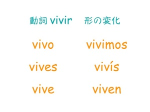

vivir
> 動詞 vivir 意味 ・生きる (to live) No puedo vivir sin ti. (I can’t live without you.) Vivir es sentir. (To live is to feel.) ・暮らす (to live) Vivo con mi abuela. (I live with my grandmother.) Esa gente vive de la pesca. (Those people live by fishing.) ・住んでいる (to live) ¿Dónde vives, José? (Where do you live, José?) Vivo en Hachiman. (I live in Hachiman.) 名詞は (la) vida = life 。意味は上記の３つの意味に対応。
